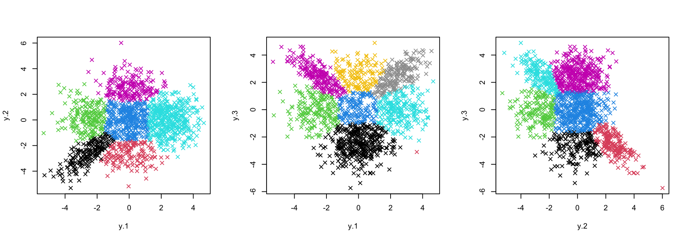

Last updated: 2022-08-13
Checks: 5 2
Knit directory: workflowr/
This reproducible R Markdown analysis was created with workflowr (version 1.7.0). The Checks tab describes the reproducibility checks that were applied when the results were created. The Past versions tab lists the development history.
The R Markdown file has unstaged changes. To know which version of
the R Markdown file created these results, you’ll want to first commit
it to the Git repo. If you’re still working on the analysis, you can
ignore this warning. When you’re finished, you can run
wflow_publish to commit the R Markdown file and build the
HTML.
Great job! The global environment was empty. Objects defined in the global environment can affect the analysis in your R Markdown file in unknown ways. For reproduciblity it’s best to always run the code in an empty environment.
The command set.seed(20190717) was run prior to running
the code in the R Markdown file. Setting a seed ensures that any results
that rely on randomness, e.g. subsampling or permutations, are
reproducible.
Great job! Recording the operating system, R version, and package versions is critical for reproducibility.
To ensure reproducibility of the results, delete the cache directory
pairwise_fitting_cache and re-run the analysis. To have
workflowr automatically delete the cache directory prior to building the
file, set delete_cache = TRUE when running
wflow_build() or wflow_publish().
Great job! Using relative paths to the files within your workflowr project makes it easier to run your code on other machines.
Great! You are using Git for version control. Tracking code development and connecting the code version to the results is critical for reproducibility.
The results in this page were generated with repository version e4f6d19. See the Past versions tab to see a history of the changes made to the R Markdown and HTML files.
Note that you need to be careful to ensure that all relevant files for
the analysis have been committed to Git prior to generating the results
(you can use wflow_publish or
wflow_git_commit). workflowr only checks the R Markdown
file, but you know if there are other scripts or data files that it
depends on. Below is the status of the Git repository when the results
were generated:
Ignored files:
Ignored: .Rproj.user/
Ignored: analysis/running_mcmc_cache/
Untracked files:
Untracked: .DS_Store
Unstaged changes:
Modified: analysis/candidate_latent_classes.Rmd
Modified: analysis/downstream.Rmd
Modified: analysis/index.Rmd
Modified: analysis/pairwise_fitting.Rmd
Modified: analysis/preprocessing.Rmd
Modified: analysis/preprocessing_cache/html/__packages
Deleted: analysis/preprocessing_cache/html/unnamed-chunk-11_d0dcbf60389f2e00d36edbf7c0da270d.RData
Deleted: analysis/preprocessing_cache/html/unnamed-chunk-11_d0dcbf60389f2e00d36edbf7c0da270d.rdb
Deleted: analysis/preprocessing_cache/html/unnamed-chunk-11_d0dcbf60389f2e00d36edbf7c0da270d.rdx
Modified: analysis/priors.Rmd
Modified: analysis/running_mcmc.Rmd
Modified: data/tpm_zebrafish.tsv.gz
Note that any generated files, e.g. HTML, png, CSS, etc., are not included in this status report because it is ok for generated content to have uncommitted changes.
These are the previous versions of the repository in which changes were
made to the R Markdown (analysis/pairwise_fitting.Rmd) and
HTML (docs/pairwise_fitting.html) files. If you’ve
configured a remote Git repository (see ?wflow_git_remote),
click on the hyperlinks in the table below to view the files as they
were in that past version.
| File | Version | Author | Date | Message |
|---|---|---|---|---|
| Rmd | c1e13d0 | Hillary Koch | 2022-07-30 | working with new computer |
| html | c1e13d0 | Hillary Koch | 2022-07-30 | working with new computer |
Here, we describe how to execute the first step of CLIMB: pairwise fitting (a composite likelihood method).
First, load the package and the simulated dataset. This toy dataset has \(n=1500\) observations across \(D=3\) conditions (that is, dimensions). Thus, we need to fit \(\binom{D}{2}=3\) pairwise models.
# load that package
library(CLIMB)
# load the toy data
data("sim")The fitting of each pairwise model can be done in parallel, which
saves a lot of computing time when the dimension is larger. This can be
done simply (in parallel, or linearly) with the function
get_pairwise_fits(). Note that the input data should be
\(z\)-scores (or data arising from some
other scoring mechanism, transformed appropriately to \(z\)-scores).
get_pairwise_fits() runs the pairwise analysis at the
default settings used in the CLIMB manuscript. The user can select a few
settings with this functions:
nlambda: how many tuning parameters to try (defaults
to 10)
parallel: logical indicating whether or not to do
the analysis in parallel
ncores: if in parallel, how many cores to use
(defaults to 10)
bound: is there a lower bound on the estimated
non-null mean? (defaults to zero, and must be non-negative)
flex_mu: should we loosen restrictions on the mean
in the pairwise fitting (defaults to FALSE, best used in conjunction
with bound)?
With all of this in place, one can obtain the pairwise fits as follows:
fits <- get_pairwise_fits(z = sim$data, parallel = FALSE)Calling names(fits) tells us which pair of dimensions
each fit belongs to.
names(fits)[1] "1_2" "1_3" "2_3"It is advisable to take a look at the pairwise fitting output before proceeding, just to make sure things have gone ok so far.
axis_names <- names(fits) %>% stringr::str_split("_")
par(mfrow = c(1,3))
purrr::map2(.x = fits, .y = axis_names,
~ plot(sim$data[, as.numeric(.y)], col = .x$cluster, pch = 4))
| Version | Author | Date |
|---|---|---|
| c1e13d0 | Hillary Koch | 2022-07-30 |
The default settings of get_pairwise_fits() are
generally sufficient for analysis. However, it makes some modeling
assumptions which can be relaxed. Namely, if one wants a slightly more
flexible model based on estimation of cluster means, one could instead
run the following:
# bound = qnorm(0.9) says that the magnitude of the estimated cluster means
# (for clusters whose mean is non-zero) must be at least the 90% quantile
# of a standard normal distribution
flexible_fits <-
get_pairwise_fits(
z = sim$data,
parallel = FALSE,
flex_mu = TRUE,
bound = qnorm(0.9)
)This change is sometimes desirable in cases where the data are highly
skewed. It is recommended to set some positive bound when
flex_mu=TRUE. If not, one is likely to underestimate the
true number of clusters. We can see that, in this case, classification
appears similar to the previous version with flex_mu=FALSE
and bound=0.
axis_names <- names(flexible_fits) %>% stringr::str_split("_")
par(mfrow = c(1,3))
purrr::map2(.x = flexible_fits, .y = axis_names,
~ plot(sim$data[, as.numeric(.y)], col = .x$cluster, pch = 4))
| Version | Author | Date |
|---|---|---|
| c1e13d0 | Hillary Koch | 2022-07-30 |
Each fit contains additional information, including the length-2 association patterns estimated to be in the given pairwise fit, the posterior probability of each observation belonging to each of these classes, and their corresponding estimated means and covariances.
Finally, save this output, as it is necessary for many parts of the downstream analyses, before moving on to the next step.
save(fits, file = "pwfits.Rdata")print(sessionInfo())R version 4.2.1 (2022-06-23)
Platform: aarch64-apple-darwin20 (64-bit)
Running under: macOS Monterey 12.5
Matrix products: default
BLAS: /Library/Frameworks/R.framework/Versions/4.2-arm64/Resources/lib/libRblas.0.dylib
LAPACK: /Library/Frameworks/R.framework/Versions/4.2-arm64/Resources/lib/libRlapack.dylib
locale:
[1] en_US.UTF-8/en_US.UTF-8/en_US.UTF-8/C/en_US.UTF-8/en_US.UTF-8
attached base packages:
[1] stats graphics grDevices utils datasets methods base
other attached packages:
[1] magrittr_2.0.3 workflowr_1.7.0 CLIMB_1.0.0
loaded via a namespace (and not attached):
[1] Rcpp_1.0.9 mvtnorm_1.1-3 tidyr_1.2.0
[4] getPass_0.2-2 ps_1.7.1 assertthat_0.2.1
[7] rprojroot_2.0.3 digest_0.6.29 foreach_1.5.2
[10] utf8_1.2.2 R6_2.5.1 plyr_1.8.7
[13] evaluate_0.15 httr_1.4.3 highr_0.9
[16] pillar_1.8.0 rlang_1.0.4 rstudioapi_0.13
[19] whisker_0.4 callr_3.7.1 jquerylib_0.1.4
[22] rmarkdown_2.14 readr_2.1.2 stringr_1.4.0
[25] compiler_4.2.1 httpuv_1.6.5 xfun_0.31
[28] pkgconfig_2.0.3 htmltools_0.5.3 tidyselect_1.1.2
[31] tibble_3.1.8 codetools_0.2-18 JuliaCall_0.17.4
[34] fansi_1.0.3 dplyr_1.0.9 tzdb_0.3.0
[37] later_1.3.0 brio_1.1.3 jsonlite_1.8.0
[40] lifecycle_1.0.1 DBI_1.1.3 git2r_0.30.1
[43] cli_3.3.0 stringi_1.7.8 cachem_1.0.6
[46] LaplacesDemon_16.1.6 fs_1.5.2 promises_1.2.0.1
[49] doParallel_1.0.17 testthat_3.1.4 bslib_0.4.0
[52] ellipsis_0.3.2 generics_0.1.3 vctrs_0.4.1
[55] iterators_1.0.14 tools_4.2.1 glue_1.6.2
[58] purrr_0.3.4 hms_1.1.1 processx_3.7.0
[61] abind_1.4-5 parallel_4.2.1 fastmap_1.1.0
[64] yaml_2.3.5 knitr_1.39 sass_0.4.2